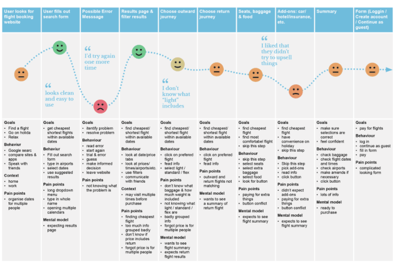
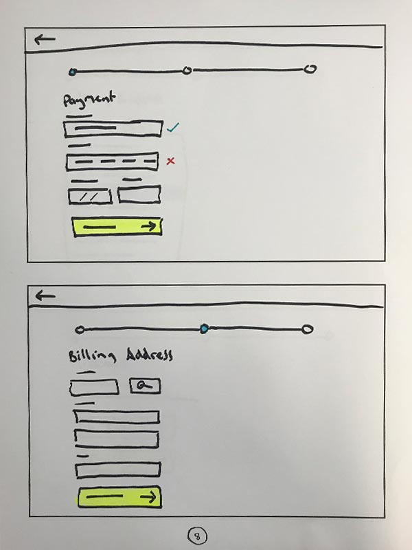
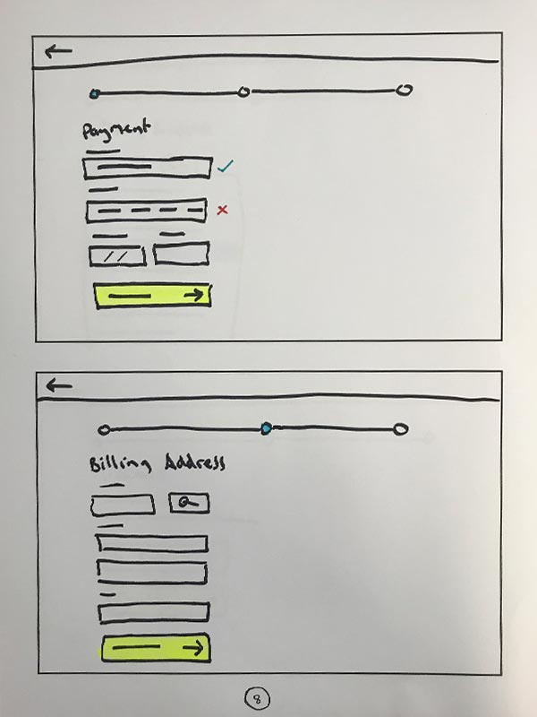
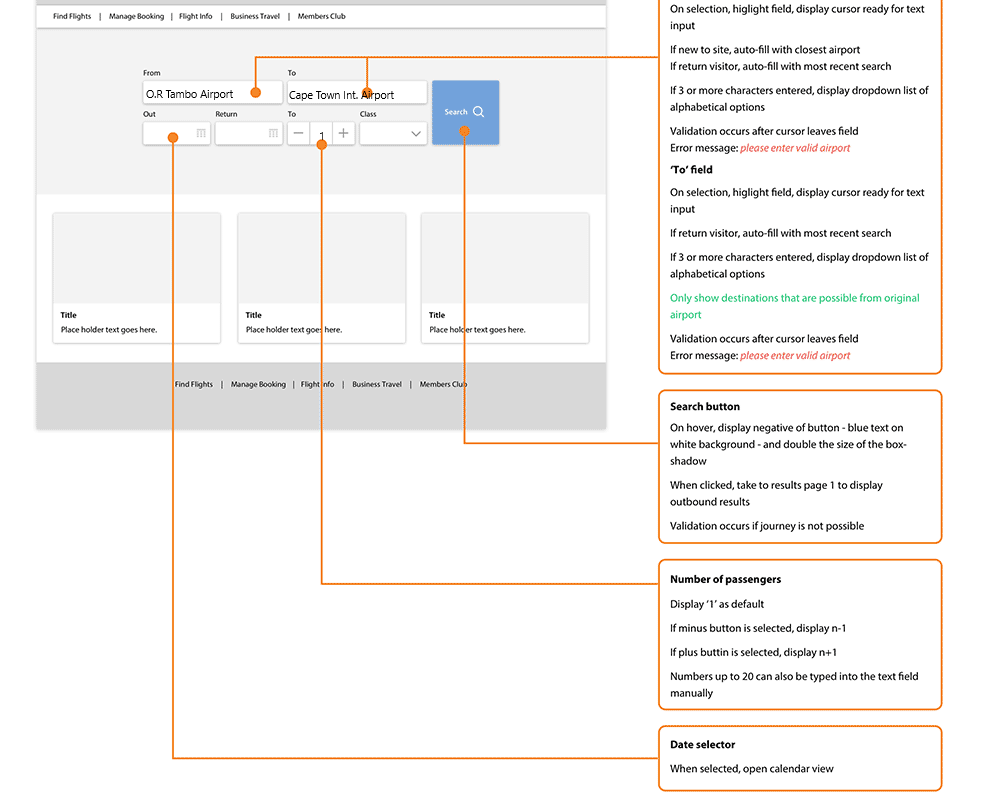

ifly Booking Airline Service
Last Updated On: 2017-09-23 21:34:07
Challenge
Conduct research on existing flight booking websites and use your findings to design a user-friendly flight booking web/mobile application(This was last project at Joburg Center For Software Engineering)
PROCESS:
- UX Research
- Design & usability-testing
- Evaluation
1. RESEARCH
To kick off the project, I started with some usability testing for the purpose of gaining some deep qualitative insights into the usability of existing flight-booking apps. The first step was to define my objectives and to decide exactly what I wanted to achieve from the usability tests. I created a recruitment screener, a consent form and a script for both mobile and desktop usability testing sessions. Careful attention was paid during the writing of the scripts to ensure that I didn't ask leading questions or closed questions that would be unfruitful. After doing this preliminary work, I conducted two mobile and two desktop usability tests on the SAA Airways and Mango Airways websites.
Objectives
- Identify typical user behavior on the SAA Airways and Mango Airways websites. Discover the primary goals of the user.
- Discover which features conform to the users expectations.
- Discover which features do not conform to the expectations of the user.
- Identify elements that cause friction.
- Learn what kinds of problems will likely cause the user to leave the website.
- Discover where and when users feel empowered and frustrated during the journey.
- Identify which pieces of information are important for the user.
Depth Interviews
The next step was to prepare a script for depth interviews for the purpose of gaining some insights into context of use. The aim was to understand which flight-booking websites users prefer and why. Scope also included how many times users typically return to a website before making a purchase and how users share information with one another when choosing flights as a group.
Competitor Benchmarking
On top of the usability testing and depth interviews, I wanted to draw some learning from best-in-class competitor websites and apps. I researched four flight-booking websites, and four mobile flight-booking apps by taking screenshots from each stage of the journey and assessing what had been done well, what had been done badly and which things are standard features that users expect.
Online Survey
I created an online survey using Survey Monkey for some more quantitative-attitudinal research to gain more understanding into context of use. I used a mixture of open and closed questions as well as some multiple choice questions. The survey would take around 2-3 minutes for people to complete.
2. ANALYSIS
Affinity Diagram
Next, it was time to start making sense of the data. Firstly, I watched the usability test and took notes. I then wrote each point down. I also went through the the depth interviews, competitor benchmarking document and survey results. I got stuck in a room and sorting them into categories to create an affinity diagram. Some clear categories emerged.
Customer Journey Map
I took the information from the affinity diagram and organized it into a step by step view of the journey to show how the users felt at each stage. I also noted their goals, behavior, context and pain points at each step.

Empathy Map
Finally, I created an empathy map showing the user's goals along with what they say, think, feel and do, since sometime what people say isn't always reflected by what they do. This helped me to empathize with the user, to gain a greater understanding of context of use, and to add to my background information of typical users.
Key Findings
The three key insights I gained by using these research methods were a). that error messages can be very unhelpful when it comes to informing the user about problems- how it can be avoided / resolved and what to do next, b). that users typically skip the add-ons section and c). that users prefer to check out as a guest rather than creating an account. Focus on these areas could prevent a lot of friction.
3. DESIGN
Mobile Flow Chart
Using the finding from my research, I was able to create a mobile flowchart aimed at mitigating some of the issues that I discovered. Given that there is a large number of ways that a user could use a flight-booking site, I decided to narrow my scope to a linear primary use case. This was partly because all four of my usability test candidates skipped the “add-ons” and “create account” sections. Moreover, flight booking journeys tend to be very linear with later steps depending on earlier steps.
Desktop Flow Chart
I took the information from the affinity diagram and organized it into a step by step view of the journey to show how the users felt at each stage. I also noted their goals, behavior, context and pain points at each step.
Define Navigation
Here are some sketches I did while thinking through the navigation. On desktop, the idea was to have a primary and a secondary nav bar that are displayed at all times, except when the user is in the “checkout” part of the journey, at which point, the nav bar would be hidden to remove unnecessary distractions. In the place of the nav bar, the user will see a “back” button and a progress bar, to indicate how much is left to complete. On mobile, the primary navigation will be off-canvas and will only be visible when the menu icon has been tapped. However, secondary navigation icons will be visible until the user enters the checkout. The decision was made to use an of-canvas navigation on mobile because the primary purpose of the website is to book flights, so other areas of the website are seen as secondary use cases.
Mobile Interaction Design
The next step in the design process was to decide how each element on the page would work when the user interacts with it. I wanted to make the forms on each page as easy to complete as possible so I ensured that the appropriate keyboard would be displayed for each input field.

Desktop Interaction Design
Another thing that could help the user fill out the search form is to suggest recent searches when the input field is first selected. Also, when three or more characters have been entered, the user will see alphabetical suggestions in a drop-down list.
 

Wireframe
After completing the research, analysis, design and prototyping tasks documentation could be collated for handing over to the development team. Ideally, everything should have been considered by this point so that the dev team don't need to guess or fill in any blanks.

4. TEST & ITERATIONS USER INTERFACE
Key Findings From Testing:
- Overall, the participants were very positive toward the flow. Most of them did not have issues in completing tasks and appreciated the simplicity of the booking process in the design.
- One user wanted the product to have an ability to see the cheapest flights fare first so that they can make a decision quick and save money.
- Further more one participant was happy with the find flights page as it shows flights prices from cheap to expensive with dates and search results for different flights companies.
Learnings & Takeaways
- During this project I learned a number of things but the most important of all was how to conduct a usability test,to manage time not to relax because of the given deadline as I could not full design and interactive design of my solution,and adaptation in a transmuted deadline
- I am pretty sure that my design instructions were solving real user problems. Going forward, I feel confident about preparing for, conducting and analyzing the output from usability tests.
- The thing I enjoyed the most was how I collaborated with the Lecturer and other students through the UX process. It was great to work with team members feeling united while working towards a common goal. I also enjoyed gaining insights into real user behavior so that I could build more empathy towards the user and fully appreciate their needs